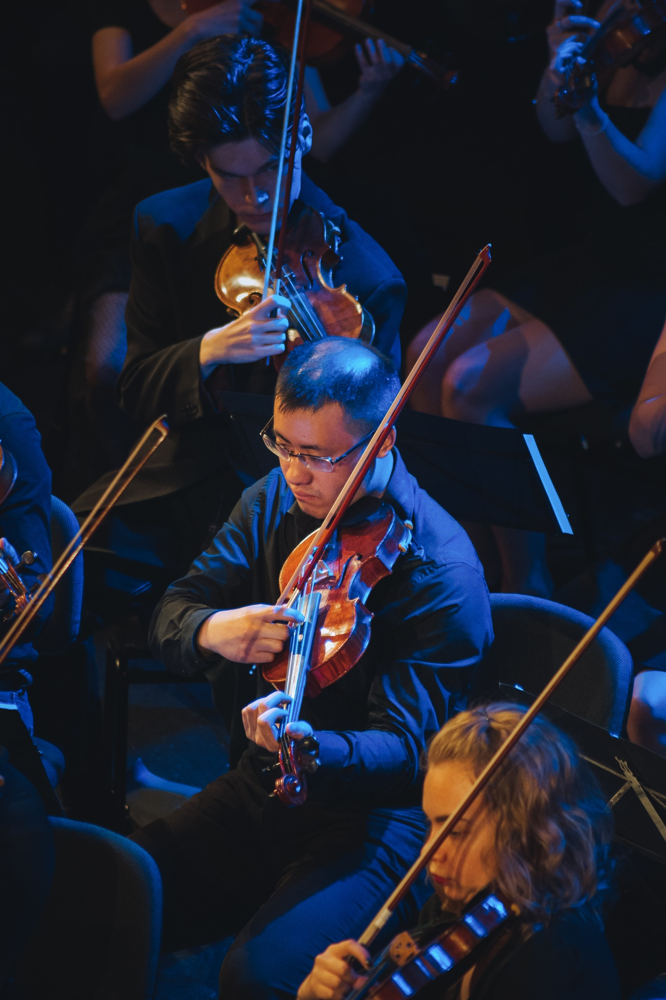

Divers
D'autres pages personnelles
Voici les pages personnelles de quelques amis que j'ai pu rencontrer pendant ma thèse.
Balthazar Fléchelles
Francesco Denisi
Gonzalo Ruiz Stolowicz
Mihai Pavel
Yusen Long
Voici aussi les pages d'amis que je connais depuis mes études à Rennes. Vous pourrez notamment y trouver beaucoup de ressources et de conseils pour le concours de l'agrégation de mathématiques (ma liste de développements était contenue dans l'union de celles de Clarence Kineider, Pierre le Barbenchon et Thomas Cavallazzi).
Bastien Jean
Clarence Kineider
Emilie Tezenas du Montcel
François Ernoult
Magali Jay
Marie Trin
Pierre le Barbenchon
Rémi Moreau
Théo Untrau
Thomas Cavallazzi
Musique
 Photo prise par
Vincent Lambert
Instagram : 0vince_photo
Photo prise par
Vincent Lambert
Instagram : 0vince_photo

 Photos prises par
Lucie WDL Photographie
Instagram : luciewdlphotographie
Photos prises par
Lucie WDL Photographie
Instagram : luciewdlphotographie
Photos prises par
Lucie WDL Photographie
Instagram : luciewdlphotographie
(Photos prises lors du concert de l'OSUL à la Salle Poirel de Nancy, le 9 juin 2023.)
Voici quelques arrangements de morceaux que j'ai réalisés sur Musescore 3 (en m'aidant d'arrangements déjà faits par d'autres et disponibles sur le site de Musescore).
- O-Zone - Dragostea Din Tei (pour orchestre symphonique avec beaucoup de flûtes, inspiré de cette vidéo) Audio Musescore :
- Saban, Levy - Les Mystérieuses Citées d'Or, avec S. Sulerzyski (pièce pour batterie, accompagnée par orchestre symphonique avec beaucoup de flûtes) Audio Musescore :
- Nishiura - The Unwound Future (Professeur Layton) (pour orchestre symphonique avec beaucoup de flûtes) Audio Musescore :
- Kavinsky - Roadgame (pour orchestre à cordes) Audio Musescore :
Des blagues mathématiques
Tanya Khovanova, My Favorite Math Jokes. (2024)